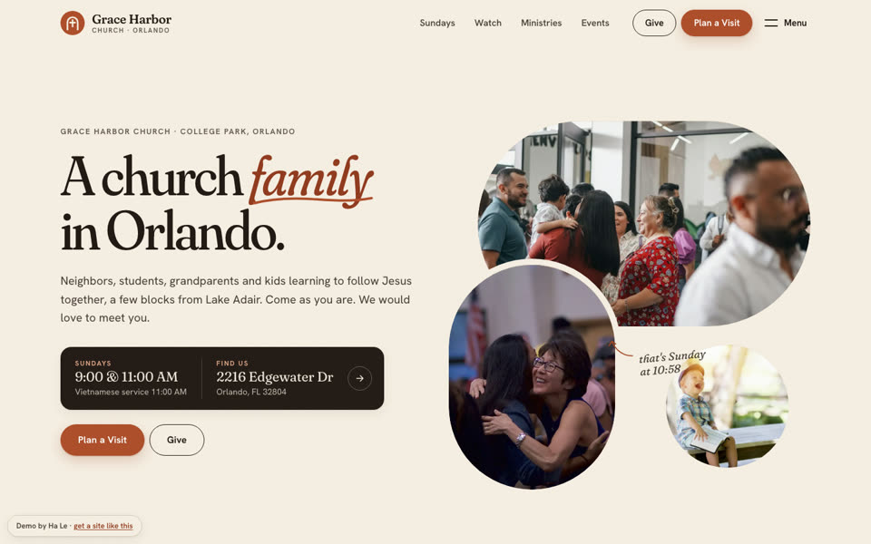
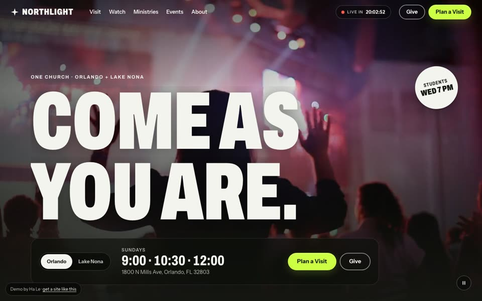
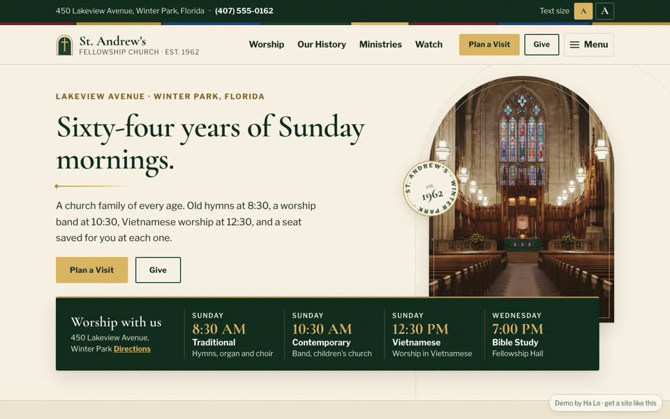

Church websites by Ha Le
A website your church family will actually use.
Three finished designs you can click through right now. Each one shows service times and your address on the first screen, a Plan a Visit page for newcomers, sermons with a live countdown, events, prayer requests and Tithely giving in one click. The churches are fictional; your site gets your name, photos and words.

Warm and welcoming
Grace Harbor
For small and medium churches. Cream paper, real faces, a family feel.
Open the demo →
Bold and modern
Northlight
For growing, multi-campus churches. Worship video, campus switcher, live countdown.
Open the demo →
Traditional and reverent
St. Andrew's
For established congregations. Order of worship, history timeline, large text option.
Open the demo →Every site includes
- Service times and address on the first screen
- Plan a Visit page with a newcomer form
- Sermons with a next live stream countdown
- Tithely giving popup on every page
- Events, ministries and prayer requests
- Staff, beliefs and a map
- Fast on phones, easy to read
- Your own domain and email setup
Want one for your church? Email halevanthien@gmail.com